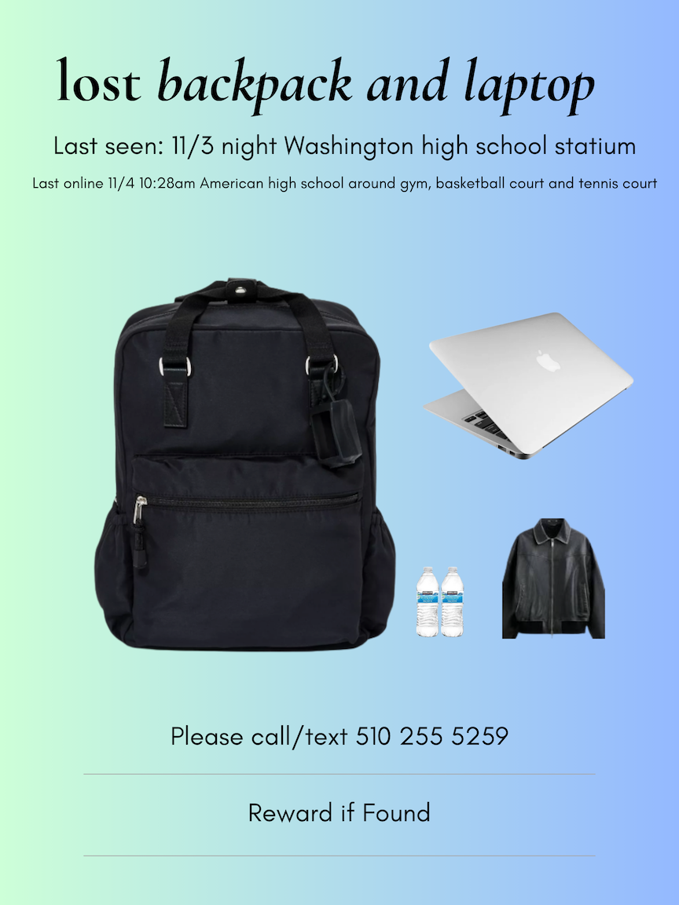

We lost a black backpack with a laptop, clothes, a student ID and Clipper card at Washington High on November 3rd night. Last online activity was at American High near the gym and tennis court on November 4th morning. These items carry significant sentimental value to us.
If you happen to find these items, we kindly ask you to get in touch with us by texting or calling (510) 255-5259. Please note, the MacBook laptop is remotely locked and can only be unlocked by Apple.
Serial number of the macbook: FVHHVKJQQ6L4.
Willing to offer cash.
